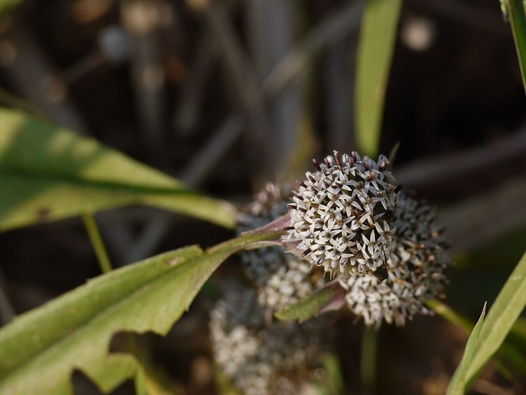

पिंक नोड फ्लावरPink Node Flower
Caesulia axillaris · Asteraceae · FLR-0370

- Scientific name वैज्ञानिक नाम
- Caesulia axillaris Roxb.
- Family कुल
- Asteraceae
- Hindi हिंदी
- पिंक नोड फ्लावर
- Local names स्थानीय नाम
- pink node flower, pink nod flawar, caesulia
- Status here यहाँ की स्थिति
- native
- Movement आवागमन
- Resident, here all year
- Known from कहाँ दर्ज
- Others have published records from the wider Awadh–Purvanchal plain, none yet from Basti–Ayodhya अवध–पूर्वांचल से दूसरों के प्रकाशित अभिलेख, बस्ती–अयोध्या से अभी नहीं
- IUCN IUCN
- not evaluated
- Review समीक्षा
- not yet reviewed
When to look कब देखें
Season not recorded. मौसम दर्ज नहीं।
Uses and possibilities उपयोग और संभावनाएँ
“Traditional medicine” means a documented traditional use, not a claim that it works. Nothing on this page is medical advice.
Drawn from the documented uses in the profile below, where each is labelled traditional, current or a research lead. All uses →
Tell it apart from इनसे अलग पहचानें
पिंक नोड फ्लावर / Pink Node Flower
Caesulia axillaris Roxb. — Asteraceae
पिंक नोड फ्लावर (घोंघची) — यह धान के खेतों, दलदली गड्ढों, गड़हियों और नहरों के किनारों पर उगने वाला एक बहुत ही आम जलीय-अर्धजलीय पौधा है। इसका तना चिकना, रसीला और थोड़ा खोखला होता है, जो पानी या कीचड़ पर रेंगते हुए ऊपर उठता है। इसके पत्ते लंबे, संकरे और आरी जैसे किनारों वाले होते हैं, जिनके आधार तने को दोनों तरफ से बांहों की तरह घेरे रहते हैं। पत्तियों के जोड़ों (गांठों) पर छोटे-छोटे गोल सफेद या हल्के गुलाबी-नीले फूलों के गुच्छे गेंद की तरह बैठे रहते हैं, इसीलिए इसे 'नोड फ्लावर' कहा जाता है।
Quick Identification त्वरित पहचान
| Feature | Description |
|---|---|
| Habit | Glabrous semi-aquatic or marsh annual herb with stout succulent striate stems |
| Leaves | Alternate, sessile, narrowly lanceolate, tapering to a dilated subauriculate base |
| Inflorescence | Sessile axillary globose compound heads nestled tightly at the leaf axils |
| Flowers | Small tubular florets, white or faintly tinged with blue, lilac, or pale pink |
| Bracts | Large involucral bracts, opposite, keeled, becoming winged and enclosing achenes |
| Fruit | Compressed obovoid achenes with a central rib and two lateral winged bracts |
Field tip: Look in flooded paddy fields and marsh edges for a fleshy smooth herb with long pointed leaves whose bases clasp the stem, bearing tight white flower balls right in the leaf joints.
हिंदी: धान के खेतों में पानी के बीच उगने वाला यह पौधा अपने लंबे पत्तों और पत्तियों की गांठों पर बिल्कुल चिपके हुए सफेद-गुलाबी फूलों के गोलों से पहचाना जाता है।
Morphology आकारिकी
| Measurement | Range |
|---|---|
| Stems | Stout, prostrate or suberect, 6–12 in. long (Hooker 1882) |
Caesulia axillaris is a glabrous, succulent, semi-aquatic annual herb that flourishes in wet mud and standing water. The stems are stout, prostrate or suberect, green or purplish, striate, rooting freely from the lower nodes in wet silt, and branching diffusely. The leaves are alternate, sessile, narrowly lanceolate or linear-lanceolate, acute or acuminate at both ends, remotely serrulate along the margins, with very numerous lateral nerves. The base of the leaf blade is prominently dilated and subauriculate, clasping the stem on either side like a pair of small ears.
The inflorescence is unique among Indian composites: it consists of sessile, axillary, compound involucrate balls nestled directly at the leaf axils. Each ball is composed of several sessile single-flowered heads packed closely onto a broad, convex, common receptacle. The florets are tubular, regular, with a narrowly campanulate, deeply five-fid limb that is white, pale blue, lilac, or faint pink. The anther bases are sagittate with branched tails; the style arms are short and linear-cuneate. The involucral bracts are two, opposite, keeled or winged, becoming hard, ribbed, laterally compressed, and firmly adnate to the mature achene, which completely encloses it like a winged seed capsule; the pappus is represented by two ovate apiculate scales.
हिंदी: इसके तने छह से बारह इंच लंबे, मोटे और रसीले होते हैं। पत्ते दो से चार इंच लंबे और दोनों सिरों पर नुकीले होते हैं। फूलों के गुच्छे पत्ती की कांख में गोल गेंद जैसे बैठे रहते हैं। फल चपटा और पंखदार होता है।
Behaviour & Ecology व्यवहार और पारिस्थितिकी
Pink Node Flower is a specialized wetland weed uniquely adapted to flooded agro-ecosystems and shallow temporary water bodies. Its succulent, hollow-chambered stems possess aerenchyma tissues that provide buoyancy in standing water while facilitating internal oxygen transport from aerial foliage down to waterlogged roots buried in anoxic mud.
The compact axillary flower heads open sequentially from September to December during the maturation of the kharif rice crop. They are visited by small syrphid flies, native halictid sweat bees, and the Dwarf Honey Bee (Apis florea), which walk across the multi-flowered composite balls to harvest pollen and nectar. Dispersal is primarily hydrochorous: the winged, persistent bracts enclosing the ripe achenes act as miniature buoyant floats, allowing the seeds to drift across flooded paddy fields, drainage ditches, and irrigation channels before settling into receding mud.
हिंदी: इसके तनों के अंदर हवा के छोटे-छोटे छेद होते हैं जिससे यह पानी पर तैर सकता है। इसके पंखदार बीज पानी के बहाव के साथ तैरते हुए एक खेत से दूसरे खेत में फैल जाते हैं।
Life Cycle / Phenology जीवन चक्र
Seeds germinate synchronously with the arrival of heavy monsoon rains and field ponding in July and August. Seedlings grow rapidly in shallow standing water, producing copious succulent stems that interlock to form dense emergent weed mats among young rice tillers.
Flowering begins in late August and peaks throughout September, October, and November as paddy crops head out and mature. Fruiting continues into December as fields are drained for harvest. The plants produce viable seed within four to six weeks of flowering. As winter drying intensifies in January, the succulent above-ground vegetative parts collapse and decompose into organic mulch, leaving millions of buoyant winged achenes embedded in the surface mud until the next monsoon flooding.
हिंदी: सावन में धान की रोपाई के समय यह उगता है और भादों से अगहन तक इसमें लगातार फूल और फल बनते रहते हैं। धान कटने और खेत सूखने पर यह पौधा सूखकर मिट्टी में मिल जाता है।
Associated Species / Interactions सहजीवी प्रजातियाँ
Caesulia axillaris forms a major component of the aquatic weed community in eastern UP wetlands and paddy margins alongside Common Knotgrass (Polygonum plebeium) and Sage Weed (Salvia plebeia).
It shares these wet foraging grounds with the magnificent Sarus Crane (Antigone antigone), which nests in flooded paddy fields and probes wet ditch edges for aquatic mollusks and plant roots. The Dwarf Honey Bee (Apis florea) eagerly forages on the abundant white florets in sunny rice paddies.
हिंदी: यह धान के खेतों में माचेची के साथ बहुतायत से उगता है। सारस क्रेन और पानी के अन्य पक्षी इसके बीच में कीड़े-मकोड़े और घोंघे तलाशते हैं।
Pests and Diseases कीट और रोग
In natural wetland habitats, Caesulia axillaris is remarkably vigorous and tolerant of herbivory. Caterpillars of semi-aquatic moths and grasshopper nymphs occasionally chew young leaf margins during the warm monsoon weeks.
In dense stagnant stands, stem rot caused by water-borne Rhizoctonia and Sclerotium can occasionally affect lower submerged stems without causing significant population mortality. The plant exhibits high natural resistance to common terrestrial agricultural pests.
हिंदी: पानी में उगने के कारण इस पर कीड़े कम असर करते हैं। कभी-कभार टिड्डे इसके पत्तों को थोड़ा कुतर देते हैं, लेकिन पौधे की बढ़त पर इसका कोई खास प्रभाव नहीं पड़ता।
Agricultural / Human Relevance कृषि प्रासंगिकता
In lowland rice-growing agriculture, Caesulia axillaris is regarded as one of the most prominent broadleaf weeds of transplanted and direct-seeded wet paddy. It competes with young rice seedlings for nitrogen and space during early crop establishment, requiring timely manual weeding or mechanical weed management.
However, in eastern Uttar Pradesh and Bihar, rural communities utilize the plant productively: tender young shoots and leaves are traditionally harvested from clean wetland canals and cooked as a seasonal wild leafy potherb (saag), known locally as 'Ghonghchi ka Saag' or 'Jalbhangra'. In indigenous folk veterinary medicine, crushed fresh plants are applied as an external cooling poultice to cattle swellings and wound dressings; this is a record of folk customs, not clinical advice.
Traditional: Tender shoots gathered as a wild wetland potherb ('घोंघची का साग'); cattle poultice in folk veterinary practice.
Today: Major agricultural broadleaf weed of wetland rice paddies; green manure component when ploughed into paddy soil.
Research direction (a lead, not a result): Analysis of allelopathic effects of root exudates on barnyard grass (Echinochloa) germination in flooded paddies.
हिंदी: किसान धान में इसे खरपतवार मानते हैं, लेकिन पूर्वांचल के गांवों में इसकी कोमल पत्तियों का साग ('घोंघची का साग') बनाकर खाया जाता है। जुताई के समय इसे खेत में दबा देने से यह उत्तम हरी खाद का काम करता है।
Expected Locally स्थानीय रूप से अपेक्षित
Not a field record. Written from published accounts for eastern Uttar Pradesh. No confirmed local sighting yet — if you have seen it, that is what the atlas needs.
अभी तक स्थानीय पुष्टि नहीं। यह विवरण प्रकाशित स्रोतों से है, किसी अवलोकन से नहीं।
In eastern Uttar Pradesh, Caesulia axillaris is expected across waterlogged rice paddies, road drainage trenches, pond margins, and wet canal berms in Basti and neighbouring districts. GBIF holds published records from across the wider Gangetic plain. A confirmed first record requires a clear photograph with place and date submitted through the project portal.
हिंदी: बस्ती, अयोध्या और संतकबीरनगर के धान के खेतों और पानी से भरे गड्ढों में इसके मिलने की पूरी संभावना है। इसकी पत्ती की कांख में लगे सफेद फूलों की तस्वीर खींचकर पोर्टल पर साझा करें।
Distribution वितरण
Global range: A monotypic genus confined almost entirely to the Indian subcontinent (India and Nepal); absent from Sri Lanka and the Malayan peninsula.
In India: Abundant throughout northern, central, and peninsular India, common across the Gangetic plain, and ascending into the outer Himalayan foothills up to 3,000 feet.
In Uttar Pradesh: Recorded in every district of the state across flooded agricultural lowlands and seasonal wetlands.
In Basti district / eastern UP: Documented as a ubiquitous wetland ruderal weed in the Flora of the Upper Gangetic Plain and regional weed checklists.
हिंदी: यह अनोखा पौधा केवल भारतीय उपमहाद्वीप में पाया जाता है। पूरे उत्तर भारत और उत्तर प्रदेश के धान वाले इलाकों में यह बहुत व्यापक रूप से फैला है।
Research Questions शोध प्रश्न
- What is the competitive threshold density of Caesulia axillaris that causes measurable grain yield reduction in direct-seeded versus transplanted rice in eastern UP? / धान के खेत में कितने पौधे होने पर पैदावार पर असर पड़ता है?
- What are the specific aerenchyma structural adaptations that allow this species to survive continuous complete submergence during flash floods?
- How long do the buoyant winged achenes maintain seed viability when submerged in anoxic paddy silt over the dry summer?
- What is the nutritional and iron content of the traditional wild wetland potherb 'Ghonghchi ka Saag'? / घोंघची के पारंपरिक साग में कौन से पोषक तत्व और खनिज पाए जाते हैं?
- Do aqueous extracts of its succulent foliage possess significant allelopathic inhibitory properties against noxious paddy weeds? / क्या इसके रस से दूसरे हानिकारक खरपतवारों को नियंत्रित किया जा सकता है?
हिंदी: बाढ़ के पानी में यह पौधा कैसे सांस लेता है और घोंघची के साग के पौष्टिक व औषधीय गुण क्या हैं, इस पर शोध किया जा सकता है।
Similar Species मिलती-जुलती प्रजातियाँ
| Species | How to tell apart | हिंदी | |
|---|---|---|---|
| [[common_knotgrass | Polygonum plebeium]] | Prostrate ground-hugging herb forming dense mats with tiny leaves and shining nutlets | माचेची |
| [[sage_weed | Salvia plebeia]] | Erect aromatic herb with square stems, broad petioled leaves, and dense panicles of lilac flowers | कमरकस |
Field rule: Succulent semi-aquatic stems, narrow leaves with clasping subauriculate bases, and tight sessile axillary globose flower balls immediately distinguish Caesulia axillaris.
हिंदी: माचेची जमीन पर चिपटी बिछी रहती है और उसमें नन्हे पत्ते होते हैं, जबकि पिंक नोड फ्लावर पानी में सीधा या रेंगता हुआ खड़ा रहता है और पत्ती के जोड़ पर गोल सफेद गेंद जैसे फूल होते हैं।
Taxonomy & Classification वर्गीकरण
Original description. Described by the Scottish botanist William Roxburgh in 1798 in Plants of the Coast of Coromandel, Vol. 1, p. 64, t. 93.
Subspecies. Monotypic — no subspecies are currently recognised.
Family and order placement. Placed in the sunflower family Asteraceae (subfamily Asteroideae, tribe Inuleae), order Asterales.
Phylogenetic notes. Caesulia represents a unique isolated monotypic lineage within the Inuleae-Plucheinae, distinguished by its single-flowered compound heads and persistent winged involucral bracts that adhere to the achene.
IUCN status rationale. Not evaluated (not_evaluated) by IUCN. The species is highly abundant, secure, and widespread throughout wetland agricultural systems across the Indian subcontinent.
हिंदी: विलियम रॉक्सबर्ग ने 1798 में इसका वर्णन किया था। यह सूर्यमुखी कुल (एस्टेरेसी) का एक बहुत अनोखा पौधा है जो अपने वंश का इकलौता सदस्य है।
Photo Gallery फोटो गैलरी
No photos yet — add field photos to media/species/pink_node_flower/ and run node scripts/sync_photos.js.
Photos needed आवश्यक फोटो
- [ ] Emergent plant habit in flooded paddy field (धान के खेत में खड़ा पौधा)
- [ ] Detail of leaf showing clasping subauriculate base (पत्ते का तने से जुड़ा हुआ आधार)
- [ ] Close-up of sessile axillary globose flower head (पत्ती की कांख में गोल सफेद फूल का गुच्छा)
- [ ] Winged achenes ripening in axillary cluster (पंखदार बीजों का गुच्छा)
References संदर्भ
- Roxburgh, W. (1798). Plants of the Coast of Coromandel, 1, p. 64.
- Hooker, J. D. (1882). The Flora of British India, Vol. 3. L. Reeve & Co., London.
- Duthie, J. F. (1903). Flora of the Upper Gangetic Plain and of the Adjacent Siwalik and Sub-Himalayan Tracts, Vol. 1. Superintendent of Government Printing, Calcutta.
- GBIF Occurrence Data — Caesulia axillaris, India (2025).
Source file: species/flora/weeds/pink_node_flower.md